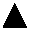

1. Вступление
1.1. … для тех, кто не знает соционики
|
«Доверяйте своему подсознанию», – говорил Милтон Эриксон. А Ричард Бендлер добавлял: «Если у Вас подсознание как у Милтона Эриксона». |
Данная публикация требует от читателя специальных знаний по психологии, конкретно – по соционике. В этой главе мы приведем материал, достаточный для понимания текста теми, кто, разбираясь в психологии, никогда не сталкивался с соционикой. Кроме того, поскольку вокруг соционики как молодой отрасли науки образовалось множество малонаучных спекуляций, целесообразно пояснить, что мы лично имеем в виду под соционическим знанием.
Соционика началась с работ Аушры Аугустинавичюте в 80-х годах прошлого века. Корни же соционики растут из типологии К.Г. Юнга. Но мы не будем устраивать исторический экскурс, как и описывать все, что может дать соционика владеющему этой системой, – это объем монографии, а не вступительного раздела.
Первая глава содержит очень упрощенный материал, который не является даже кратким справочником по соционике. Практически это лишь словарь терминов, употребляемых в статье.
Итак, соционика – это раздел психологии, который занимается изучением так называемого информационного метаболизма индивидуума, т.е. тем, как информация воспринимается, как обрабатывается и как выдается. Понятно, что модель является абстрактной, и искать на физиологическом уровне описываемые ниже функции не имеет смысла (хотя могут быть найдены закономерности, связывающие физиологию организма и соционический тип, но это – дело будущего). Тем не менее, эта модель дает отличные результаты на практике.
Всего существует 16 типов информационного метаболизма (ТИМов). Такое число получилось вследствие использования четырех шкал: логика-этика, интровертность-экстравертность, сенсорика-интуиция, рациональность-иррациональность. Разумеется, шкалы аналоговые и непрерывные: нет, скажем, позиции «100% этики и 0% логики». Не стоит также забывать, что эти шкалы одновременно проецируются на «общую плоскость» цельной единой системы, которая называется психикой.
Для процесса обработки информации вводится восемь аспектов:
 –
структурная логика (также часто употребляется «белая логика», БЛ). Это логика,
отвечающая на вопрос «что?»: структуры, соотношения, взаимное положение,
формальная логика и т.п.
–
структурная логика (также часто употребляется «белая логика», БЛ). Это логика,
отвечающая на вопрос «что?»: структуры, соотношения, взаимное положение,
формальная логика и т.п.
– деловая логика (ЧЛ), отвечающая на вопрос «как?»: действия, польза, целесообразность и т.п. практические аспекты.
 –
сенсорика ощущений (БС). Комфорт, чувства (физиологические), и т.п.
–
сенсорика ощущений (БС). Комфорт, чувства (физиологические), и т.п.
– волевая сенсорика (ЧС). Силовое давление, уверенность в своих силах, территориальность и т.п.
 –
этика отношений (БЭ): «кто к кому как относится».
–
этика отношений (БЭ): «кто к кому как относится».
– этика эмоций (ЧЭ).
 –
интуиция времени (БИ).
–
интуиция времени (БИ).
 – интуиция возможностей (ЧИ).
| 1 | 2 |
| 3 | 4 |
| 5 | 6 |
| 7 | 8 |
Эти аспекты 16-ю различными способами размещаются в матрице 2х4, где каждая ячейка (функция) имеет свой номер. Роль функций по порядку номеров такая (в качестве примера использован ТИМ «сенсорно-этический интроверт»):
- Базовая. Задает «цель жизни» – то, к чему человек стремится, и в чем он является прирожденным экспертом. К примеру, БС здесь обозначает стремление к уюту, комфорту (однако представления об уюте могут весьма отличаться от общепринятых, и это будет четкая позиция «эксперта для себя»).
- Творческая. По этой функции индивид творит – быстро меняя конкретные задумки, легко переключаясь и т.п. Решение проблем также происходит в первую очередь по этой функции (перебирая варианты). Пример: ЧЭ в этой позиции обозначает стремление решить задачу методом «создать соответствующее настроение», в общем – воздействовать на другого человека эмоциями, чтобы тот начал делать то, что требуется.
- Ролевая. Функция работает кратковременно, напоказ – «кем хочется выглядеть». Пример: интуиция времени – несколько дней не опаздывать на новую работу, но потом делать это регулярно (ролевая долго не работает).
- Болевая. Точка наименьшего сопротивления – даже просто использование может быть болезненным, отрицательная же оценка по этой функции бьет очень сильно. Пример: ЧЛ – стремление избежать оценок типа «ты неправильно делаешь» (в том числе – и от самого себя).
- Суггестивная. Функция, по которой человек легче всего внушается. Пример: ЧИ – индивида можно «поймать» на новую идею, возможность и т.п.
- Референтная. По этой функции человек желает как можно лучше разбираться, обучаться. По ней же обычно хвастаются достижениями. Пример: БЛ – стремление разобраться в закономерностях действительности, науке и т.д.
- Ограничительная. По этой функции легче всего идет команда «стоп!» как другим, так и самому себе (также и от других индивиду). Пример: ЧС – прямое «нельзя!» сработает гораздо эффективнее, чем «не время», «ты этим обижаешь» и т.д.
- Демонстрационная, или «без слов на деле». Это – то, что получается как бы само собой, без участия сознания, но весьма адекватно. Пример: БЭ в этой функции обозначает, что человек чувствует, кто как к кому относится, хотя ему достаточно трудно объяснить, на чем основывается такое ощущение.
Кроме дихотомий, существуют т.н. признаки Рейнина – не вдаваясь в их происхождение, отметим, что они представляют собой «альтернативную сетку», и об уверенном типировании можно говорить лишь тогда, когда совпали и дихотомии, и проявления функций в соответствующих позициях, и признаки Рейнина.
Обратим внимание на то, что ТИМ – это не гороскоп из бульварной прессы, в котором все родившиеся под одним знаком Зодиака имеют одинаковый прогноз на целый месяц. Во-первых, ТИМ указывает на естественный информационный метаболизм индивида, который может быть значительно искажен средовыми фактороми: отдельные функции могут быть неразвиты, на других могут стоять акценты. Приблизительно треть типируемых, по опыту авторов, живут, пользуясь «навязанным» ТИМом. Простейший пример: из ребенка-интроверта родители насильно делают «общительного и веселого», или наоборот: экстраверта среда заставляет вести себя «смирно, тихо и прилично». Эта неконгруэнтность воспитания может зафиксироваться на всю жизнь, образуя т.н. «маску».
Взаимодействия между ТИМами удобно показывать на кубиках, верхняя грань которых – это 1-4 функции, нижняя – 5-8. Смотрите на рисунки, и все поймете. Обратите внимание: кубики нельзя «вертеть» любым способом, пытаясь совместить. Нумерация функций у половины ТИМов идет по часовой стрелке, у другой половины – против.
Корреляции соционики с аналитической психологией и трансактным анализом:
1, 2 функции – это сильные сознательные, блок эго, по Берну – «взрослый».
3, 4 функции – слабые сознательные, блок супер-эго, Персона по Юнгу, «родитель для себя».
5, 6 функции – слабые бессознательные, блок супер-ид, на этой же «глубине» Анима/Анимус, «ребенок» (поэтому в соционике эти функции часто называют «детским блоком»).
7, 8 функции – сильные бессознательные, блок ид, на этой же «глубине» – Тень и архетипы коллективного бессознательного, по Берну – «родитель для других».
Часто имеет место путаница – Тень относят к архетипам. Это не так: архетип – это структура, принадлежащая коллективному бессознательному, Тень же – не является структурой и относится к личному бессознательному. Такое стандартнейшее непонимание связано прежде всего с тем, что у самого Юнга встречается утверждение: «Тень – это архетип». Но нельзя забывать о том, что Юнг de facto произвел революцию в психологии, и разрабатывал свою теорию на протяжении всей жизни, начав с нуля. Поэтому требовать от него устоявшейся четкой терминологии во всех работах, включая самые ранние, не логично. Надо не выдирать цитаты из контекста, а осмысливать все работы Юнга, вычленяя из них общую концепцию, систему, независимо от терминологии.
Квадры – это группы ТИМов, по четыре в каждой, которые обладают групповыми признаками, отличающими их от других квадр. Существуют четыре квадры.
Каждый соционический тип имеет исторически сложившееся название, соответствующее известной личности или персонажу (будьте осторожны – иногда это вносит путаницу, например, Ф.М.Достоевский по типу вовсе не Достоевский, а Гамлет), а также обозначается трехбуквенным сокращением. Первые две буквы – это Логика, Этика, Интуиция, Сенсорика; третья – Эктраверсия или Интроверсия. Например, СЛИ (Габен) – сенсорно-логический интроверт, ИЭЭ (Гексли) – интуитивно-этический экстраверт. Существуют и другие обозначения, но они в этой работе не используются.
Также сделаем отступление в целях профилактики возражений в духе: «понапридумывали тут, а покажите-ка нам эти ваши функции!».
Подобное – незнание азов эпистемологии. Если на малообъемной эмпирической базе вроде бы прорисовывается связь чего-то с чем-то, этим целесообразно пользоваться за неимением лучшего, продолжая набирать эмпирику до тех пор, пока статистика не даст на ней более сложных и корректных зависимостей. Вся медицина держится именно на этом – так, например, полторы сотни лет лечили воспаление легких лошадиными дозами камфары, пока не были открыты антибиотики. Камфара давала статистически лучшие исходы при пневмониях – это эмпирика. И сейчас это будет действовать точно так же, если более эффективные альтернативы будут недоступны. А вот множество всеразличных теорий о том, как именно камфара действует на легкие – позже оказались полной чушью, которая вполне метафизически занимала головы врачей...
На той же самой эмпирике (фактах), которая лежит в основе соционической модели, строилось еще с полсотни моделей (в совершенно разных школах – начиная с «либидо» З.Фрейда и заканчивая «живым духом» Л.Толстого). Чистая метафизика – ее можно понять и принять, но вот доказывать... Требование подобного – «тяжелый случай». К сожалению, достаточно часто встречающийся, как и заявления «в науке нет места метафизике!!!» (произносится с выражением «еретики!»), несмотря на вполне себе метафизичность базовых понятий, используемых в науке: энергии, материи, времени, пространства и т.д.
Метафизика, повторимся, не доказывается. Можно лишь смотреть на следующие из нее выводы, приложимые к действительности – и тут уже можно говорить о том, что соционическая модель достаточно адекватно отображает действительность, а, скажем, концепция «бог (монотеистический) есть» – не имеет отражения в действительности.
Психика для психологии – всегда черный ящик. Любая ее модель (заслуживающая названия модели) метафизична. Но... она может быть в разной степени удобной и непротиворечивой.
Юнг не зря писал: «Факты заставляют что-то искать, рассудок находит что-то не то – порочный круг практически неразрываем. Годы требуются для того, чтобы научиться критически воспринимать то, что подсовывает сознание»...
В любую психологическую модель изначально заложена теорема о неполноте. Теорема Гёделя – главная (и нерешаемая) проблема психологии, в которой разум изучает «сам себя». Помимо всего прочего, это свидетельствует о том, что психика никогда не будет познана до конца, т.к. «познавшая» психика шире той, что познавалась, и в свою очередь требует дополнительного познания, в результате чего вновь получится что-то отличное от того, что познавалось. Та самая «дурная бесконечность»...
P.S. Для не-социоников, заинтересовавшихся темой: на данный момент не
существует ни одного учебника по соционике, который мы бы рискнули посоветовать
прочесть для изучения предмета с нуля. Все нам известные – во-первых, не полны,
во-вторых, содержат неверные тезисы. Но есть Всемирная Сеть, и есть собственная
голова. По крайней мере, мы надеемся на ее наличие у читателей...